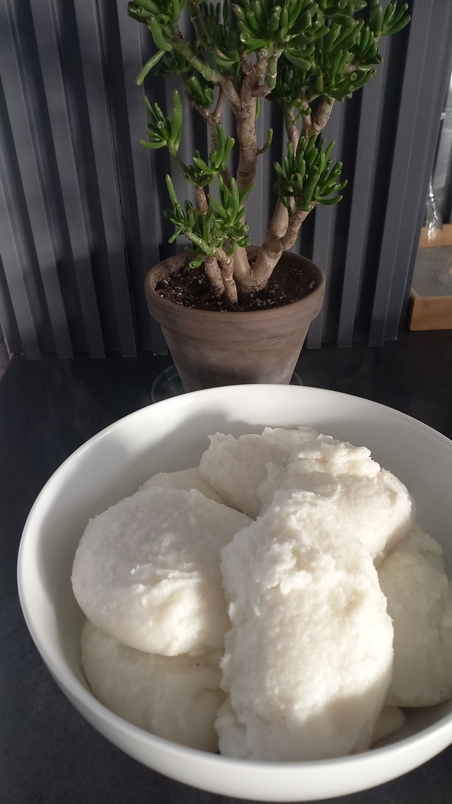

Our Menu
We present to you our menu that is made with love. You as a customer are able to customize our menu and ingredients.
We serve starters, main course, starches, meats, sides, and desserts
STARTERS
| Dish | Description | Price | Image |
|---|---|---|---|
| Boerewors "Proetjies" | Small, grilled pieces of traditional spiced sausage served on skewers with chakalaka | R45 |  <> <> |
| Vetkoek & Mince | Small, golden-fried yeast dough balls filled with savory curried ground beef | R40 |  > > |
| Peri-Peri Livers | Chicken livers in spicy peri-peri sauce with toasted Portuguese-style roll slices | R55 |  |
MAIN COURSE - STARCHES
 Pap with parmesan & truffle oil R35 |
 Samp & Beans with butter & herbs R40 |
 Dumpling with carrots & rosemary R30 |
 Spiced Rice with aromatic spices R35 |
 Ting fermented sorghum R45 |
SLOW COOKED MEATS
Beef Stew paprika, rosemary, sweet chili R85 |
 Mogodu (Tripe) BBQ spice & chutney R90 |
 Hardbody Chicken special house sauce R80 |
 Butter Chicken Curry creamy & aromatic R95 |
SIDES & SALADS
 Chakalaka R25
Chakalaka R25
 Beetroot R20
Beetroot R20
 Potato Salad R25
Potato Salad R25
 Pumpkin R25
Pumpkin R25
 Creamed Spinach R30
Creamed Spinach R30
DESSERTS
 Malva Pudding warm apricot custard R45 |
.jpg) Milk Tart cinnamon dusted R40 |
 Peppermint Tart no-bake caramel & peppermint R50 |
Customize Your Menu
All dishes can be customized for dietary needs, spice levels, and portion sizes. Contact us for a personalized quote!